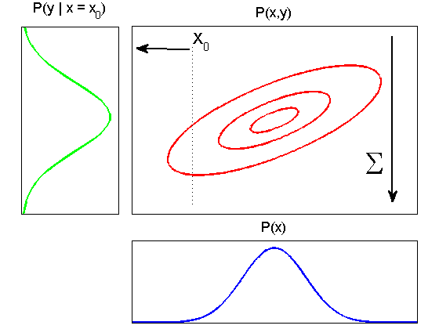

2D Gaussian contour plot along with its 1D marginals and conditionals.
function gauss2dMargCondPlot()
fig = figure('Color','w');
mu = [0.5 0.5];
sigma = [0.018 0.01 ; 0.01 0.011];
plot2d();
plotMarginal();
plotConditional();
annotate();
function plot2d()
f = @(X)gaussProb(X, mu, sigma);
[x,y] = meshgrid(-0.2:0.005:1.2, -0.2:0.005:1.2);
[r, c]=size(x);
data = [x(:) y(:)];
p = f(data);
p = reshape(p, r, c);
mainAx = axes('Parent', fig, 'Position', [0.3, 0.35, 0.65, 0.57]);
contour('Parent', mainAx, x, y, p, 'r', ...
'LineWidth', 2, 'LevelList', [4 11 15]);
axis([0.2, 0.8, 0.2, 0.8]);
removeTicks();
title('P(x,y)', 'FontSize', 13);
hold on;
end
function plotMarginal()
fmarge = @(x)gaussProb(x, mu(1), sigma(2, 2).^2);
margeAx = axes('Parent', fig, 'Position', [0.3,0.02,0.65,0.25]);
res = 0.45:0.0001:0.55;
plot(res,fmarge(res), '-b', 'LineWidth', 2, 'Parent', margeAx);
axis([0.45, 0.55, 0, 40]);
removeTicks();
title('P(x)', 'FontSize', 13);
end
function plotConditional()
mu_cond = mu(2) + sigma(2,1)*(sigma(1,1)^(-1))*(0.4 - mu(1));
sigma_cond = sigma(2,2) - sigma(2,1)*(sigma(1,1)^(-1))*sigma(1,2);
fcond = @(x)gaussProb(x, mu_cond, sigma_cond.^2);
condAx = axes('Parent', fig, 'Position', [0.05 0.35 0.22 0.57]);
res = 0.43:0.001:0.465;
plot(res, fcond(res), 'g', 'LineWidth', 2, 'Parent', condAx);
axis([0.43, 0.46, 0, 80]);
removeTicks();
view([90 90]);
title('P(y | x = x_0)','FontSize',13)
end
function annotate()
annotation(fig, 'arrow', ...
[0.8938 0.8938], [0.8904 0.387], 'LineWidth', 2);
annotation(fig, 'textbox', 'String', {'\Sigma'},...
'FontSize', 30, 'FitBoxToText', 'off', 'LineStyle', 'none',...
'Position', [0.82 0.4991 0.03025 0.07531]);
annotation(fig, 'line', ...
[0.4382 0.4382], [0.8571 0.373], 'LineStyle',':');
annotation(fig, 'textbox', 'String', ...
{'X_0'}, 'FontSize', 14, 'FitBoxToText','off', ...
'LineStyle','none','Position',[0.4274 0.8704 0.02331 0.04904]);
annotation(fig, 'arrow', ...
[0.4306 0.3125], [0.8501 0.8529], 'LineWidth', 2);
end
function removeTicks()
set(gca, 'XTick', []);
set(gca, 'YTick', []);
end
end
